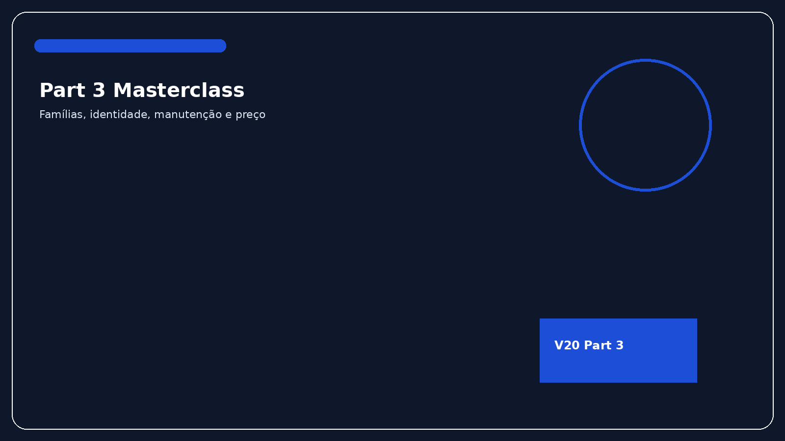
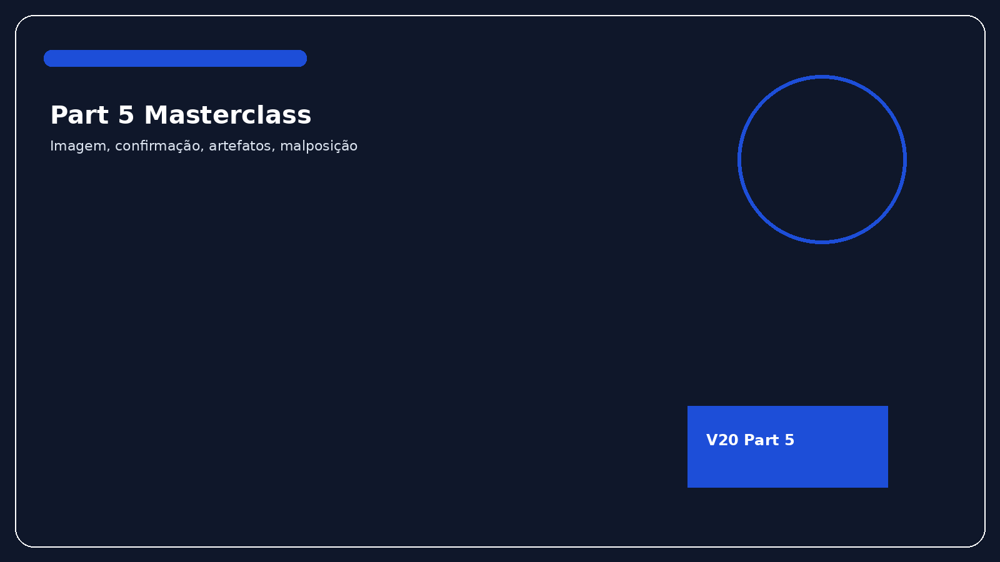

Part 1 · Antes do CVC
Precisa mesmo invadir? Necessidade, proporcionalidade e alternativa menos invasiva.
Abrir

Part 2 · Escada do acesso
Do menor acesso suficiente ao degrau realmente proporcional.
Abrir

Part 3 · Dispositivos
Familias com identidade propria, manutencao e custo de escolha.
Abrir

Part 4 · Tecnica viva
Campo, kit, fio, dilatacao, fixacao e troubleshooting no mesmo gesto.
Abrir

Part 5 · Imagem e confirmacao
US, RX, trajeto, ponta, artefato e humildade interpretativa.
Abrir
Part 6 · Complicacoes
Preco do erro, reconhecimento salvador e conduta diante do dano.
Abrir

Part 7 · Transferencia e ensino
Bundle, rubrica, auditoria visual e debriefing do operador ao preceptor.
Abrir

Part 8 · Territorios hostis
Quando a anatomia, a historia ou o contexto cobram mais raciocinio.
Abrir
Part 9 · Checklist integrado
Fecho operacional da jornada inteira com sintese e mapa de erros recorrentes.
Abrir